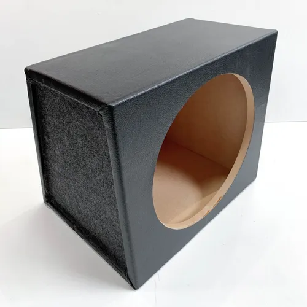
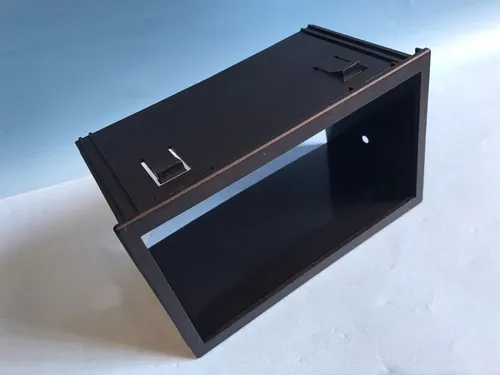
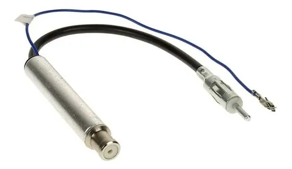
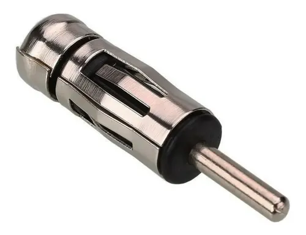
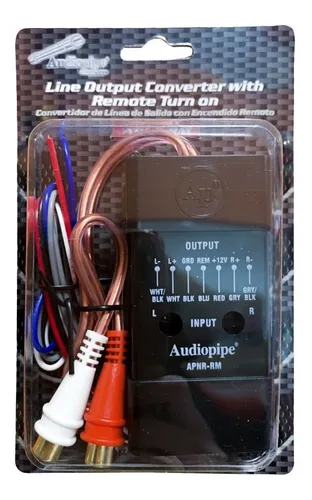
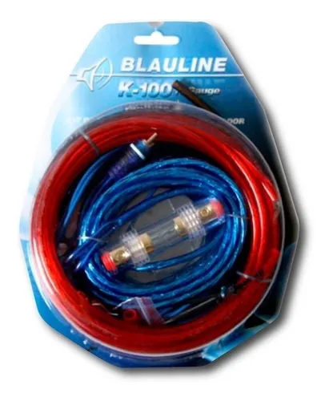

Cajon Para Subwoofer 12 Sellado Mdf Cuero
Altura: 35.5cm
ancho: 39cm
profundidad: 22cm
cant de agujeros: 1

Frente Adaptador Para Doble Din

Adaptador Amplificador Antena
Largo: 30cm

Adaptador De Antena Estereo Hembra Din Macho
Largo: 4cm

Adaptador De Impedancia
Salidas: 2 rca hembra

Kit De Cables 10 Gauge Potencia
RCA 5 metros
Positivo 5 metros
negativo 0.5 metros
remoto 5 metros
porta fusible y Fusible